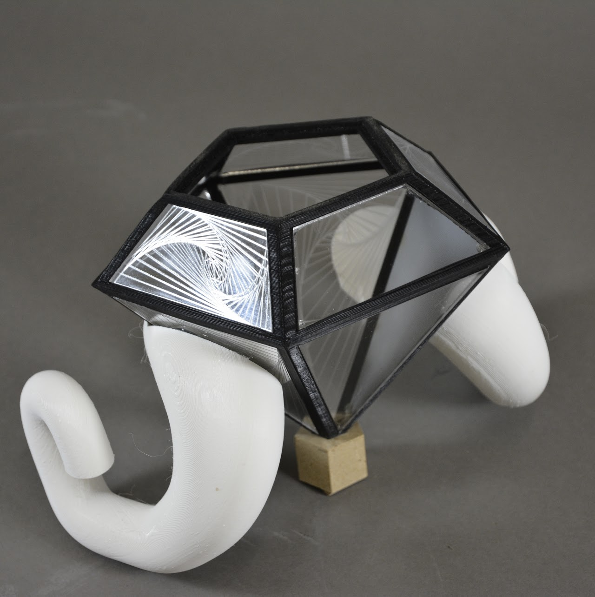
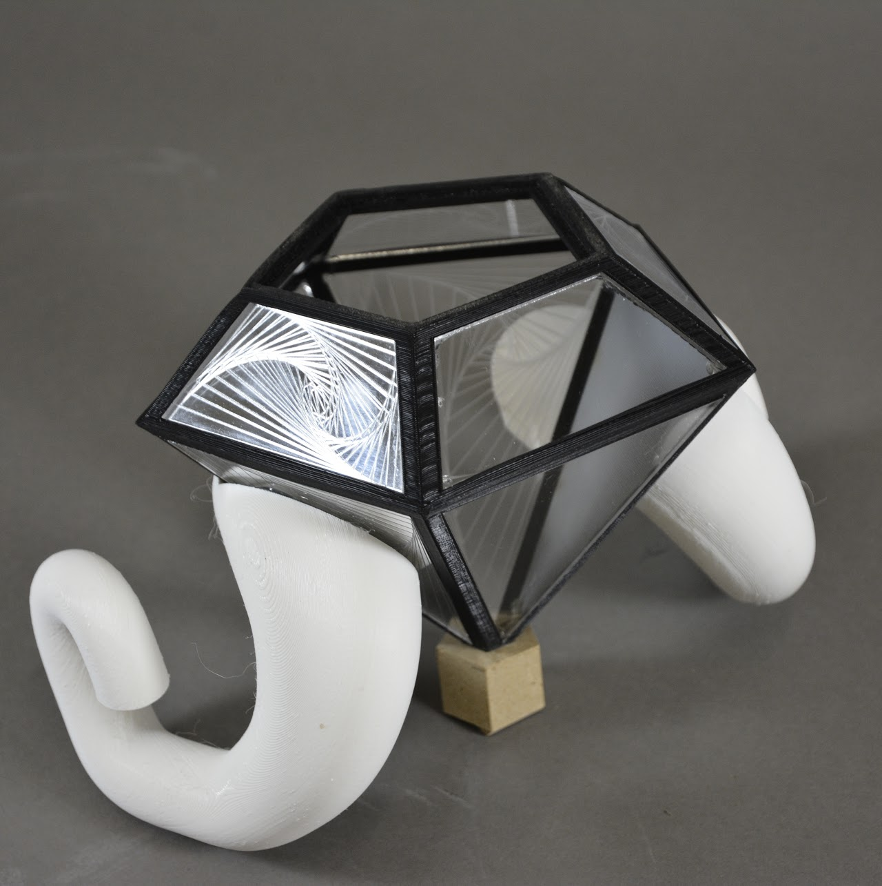
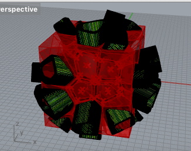
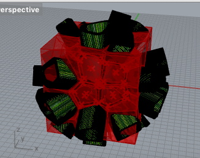
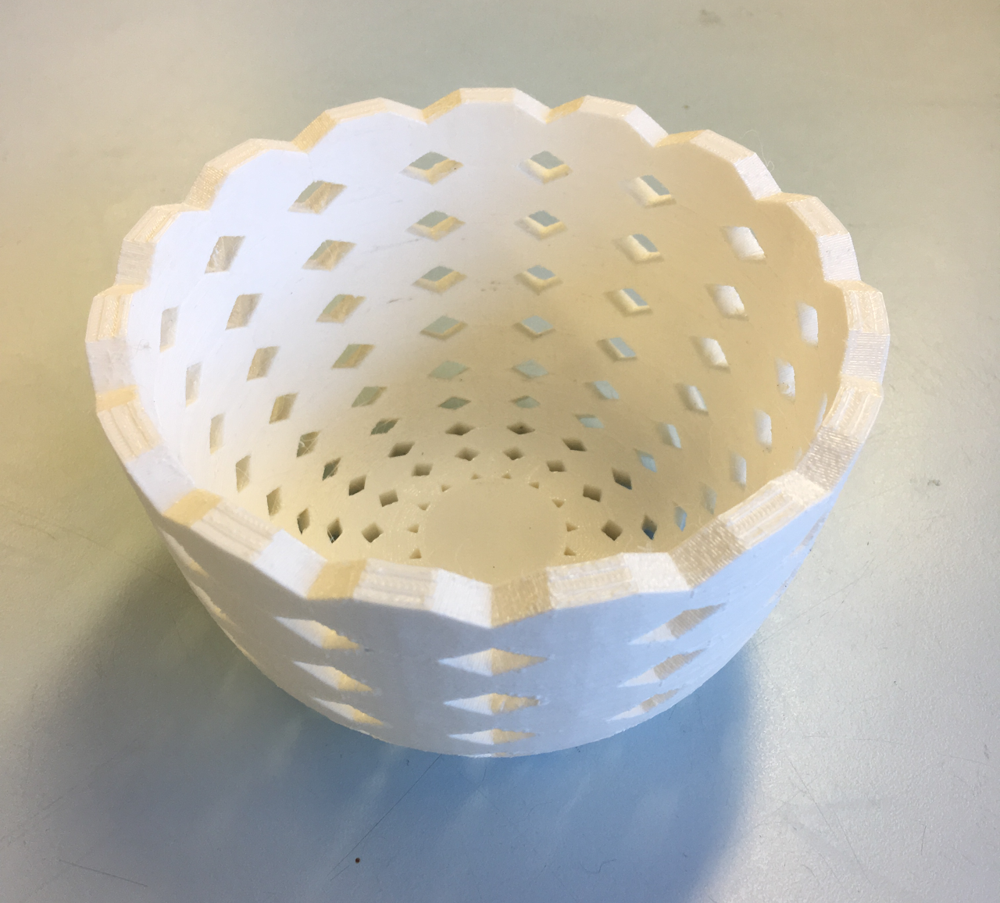
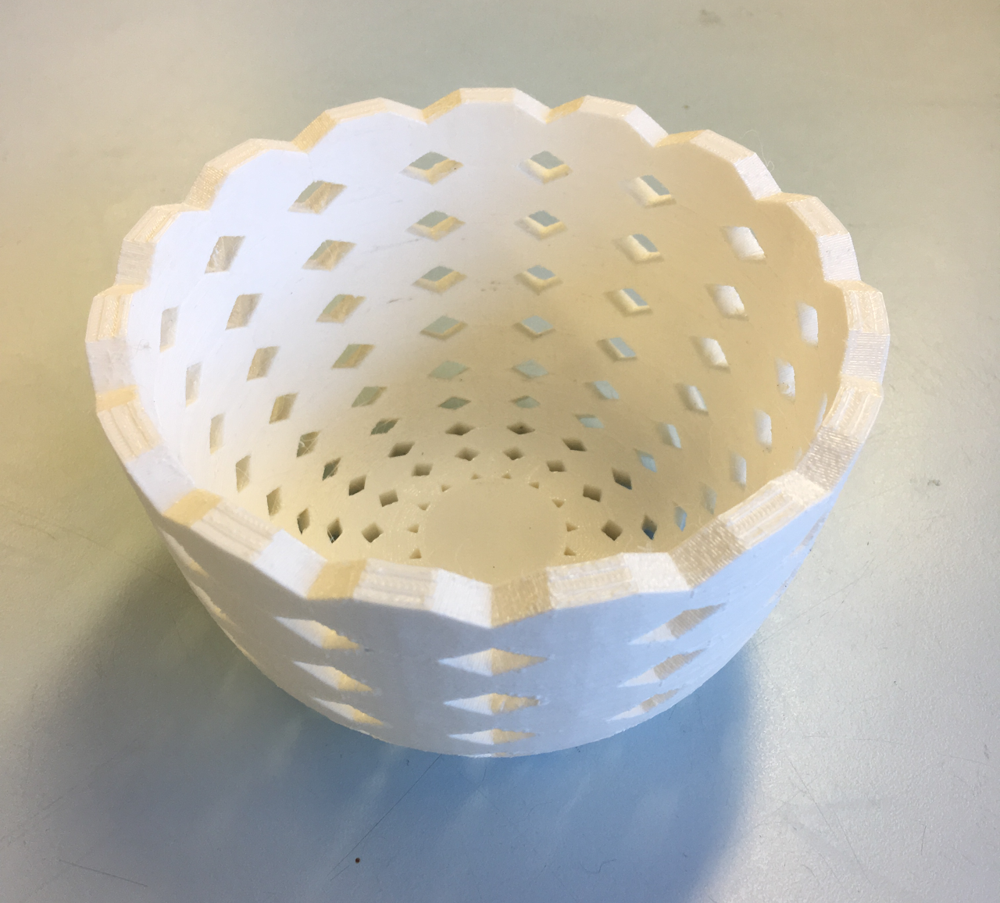
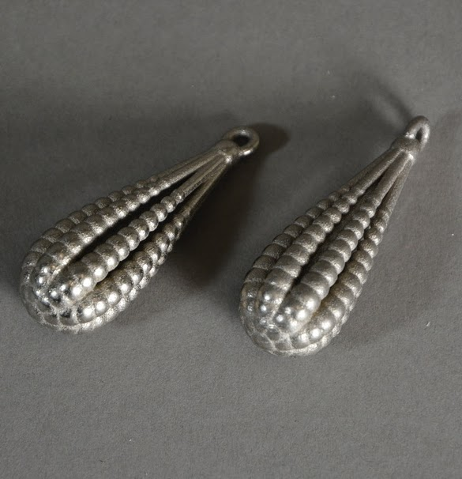
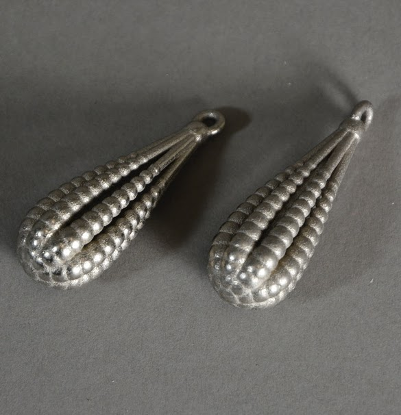

<title> lick wilmerding high School - technical arts : algorithms</title>
</head>
<body>
<p id = "about">
<p id = "projects">
</body>
algorithm to object (spring 2019)
<br>
i took one semester of algorithm to object in my senior year at lick-wilmerding high school. we learned how to create algorithms in rhino (a 3d modelling software) using grasshopper. with these algorithms, we were able to generate various shapes and patterns that would normally be very tedious to do by hand.
<br>
in the past, whenever i would take technical arts courses, we would have to manually create everything in rhino one shape at a time, but through this course, I was able to learn ways to automate the generation for me so that it would not only be much more quick, but also more exact + precise.
</p>
<br>
i took one semester of algorithm to object in my senior year at lick-wilmerding high school. we learned how to create algorithms in rhino (a 3d modelling software) using grasshopper. with these algorithms, we were able to generate various shapes and patterns that would normally be very tedious to do by hand.
<br>
in the past, whenever i would take technical arts courses, we would have to manually create everything in rhino one shape at a time, but through this course, I was able to learn ways to automate the generation for me so that it would not only be much more quick, but also more exact + precise.
<p id = "projects">
here are the projects i worked on (click to see process, hover to see summary):
<ul>
</ul>
</p>
<ul>
<li>
self-iteration project
</li>
for the self iteration project, we were tasked to create an object that includes a geometric pattern that represent us. 
for the self iteration project, we were tasked to create an object that includes a geometric pattern that represent us. 
<li>
grasshopper tutorial project
</li>
for the grasshopper tutorial project, we had to manipulate the grasshopper tools to create unique shapes. 
for the grasshopper tutorial project, we had to manipulate the grasshopper tools to create unique shapes. 
<li>
grasshopper 3d print project
</li>
for the grasshopper 3d print project, we had to design a 3d printable object using the tools we had learned from grasshopper. 
for the grasshopper 3d print project, we had to design a 3d printable object using the tools we had learned from grasshopper. 
<li>
grasshopper shapeways project
</li>
for the grasshopper shapesways project, we had to design something that would be sent to a metal 3d printing company while staying under the maximum of $100 such that the piece is 80% created by grasshopper. 
for the grasshopper shapesways project, we had to design something that would be sent to a metal 3d printing company while staying under the maximum of $100 such that the piece is 80% created by grasshopper. 